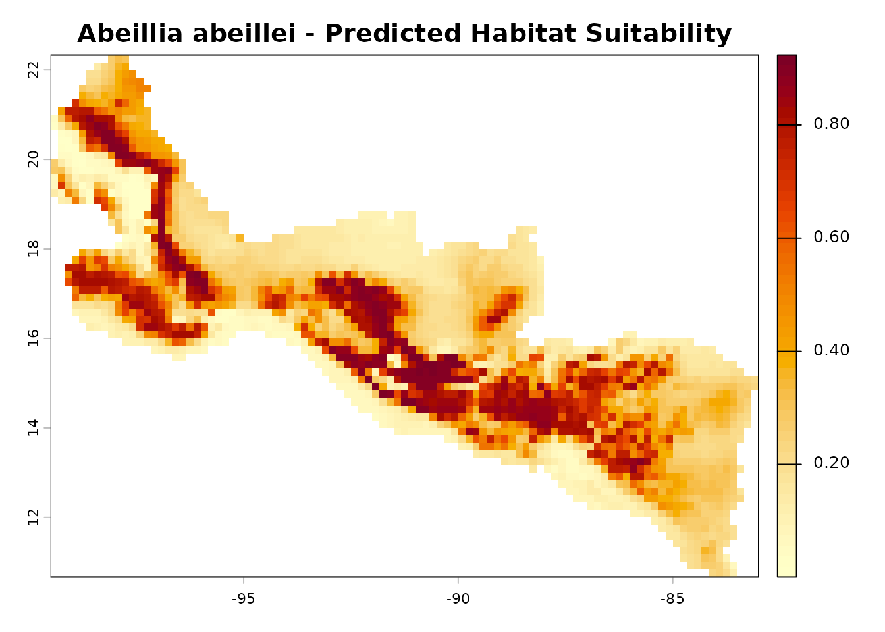
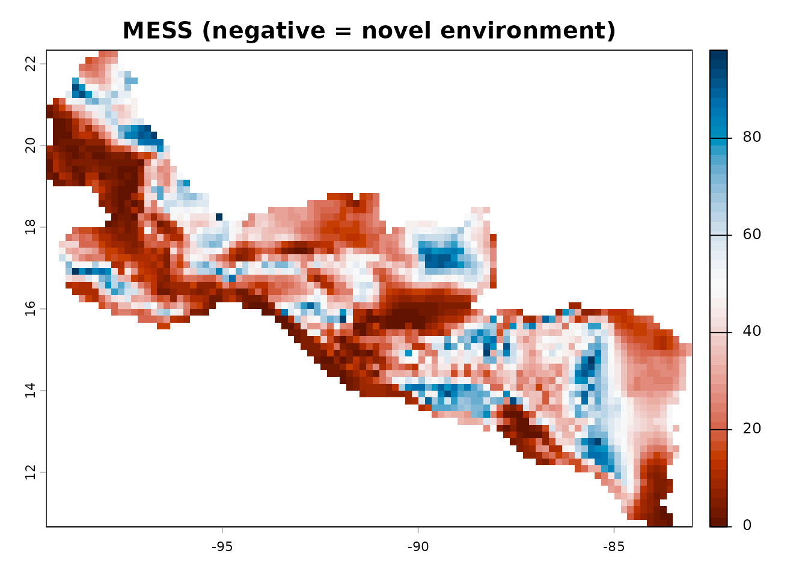

This article walks through a complete species distribution modelling
workflow using maxentcpp. We model the distribution of the
Emerald-bellied Hummingbird (Abeillia abeillei) using two
bioclimatic variables bundled with the package.
Installation
# From CRAN (when available)
install.packages("maxentcpp")
# Or from GitHub
remotes::install_github("alrobles/maxentcpp")Load the Package and Data
maxentcpp ships with a cropped bioclimatic raster stack
(bio1: Annual Mean Temperature, bio12: Annual Precipitation) and 73 GBIF
occurrence records for Abeillia abeillei.
library(maxentcpp)
library(terra)
#> terra 1.9.34
# Load environmental layers
stack_path <- system.file("extdata", "stack_1_12_crop.rds",
package = "maxentcpp")
example_rasters <- terra::unwrap(readRDS(stack_path))
bio1 <- example_rasters[[1]]
bio12 <- example_rasters[[2]]
# Convert to maxentcpp grid objects
g_bio1 <- maxent_grid_from_terra(bio1)
g_bio12 <- maxent_grid_from_terra(bio12)
# Load occurrence records
data(example_occ_df)
head(example_occ_df)
#> species long lat
#> 1 Abeillia abeillei -92.933 15.733
#> 2 Abeillia abeillei -93.192 15.880
#> 3 Abeillia abeillei -92.632 15.420
#> 4 Abeillia abeillei -92.741 15.644
#> 5 Abeillia abeillei -92.229 15.158
#> 6 Abeillia abeillei -93.093 15.823Prepare Spatial References
Create a grid dimension object that matches the environmental layers, then convert occurrence lon/lat coordinates to grid row/column indices:
info <- maxent_grid_info(g_bio1)
dim <- maxent_dimension(nrows = info$nrows,
ncols = info$ncols,
xll = info$xll,
yll = info$yll,
cellsize = info$cellsize)
occ <- maxent_read_occurrences(example_occ_df, dim,
lon_col = "long",
lat_col = "lat")
cat("Presence points:", length(occ$indices), "\n")
#> Presence points: 73Sample Background Points
Maxent contrasts presence locations against a random sample of background points. The default of 10 000 background points is standard practice:
bg <- maxent_background_indices(g_bio1, n = 10000, seed = 42)
cat("Background points:", length(bg$indices), "\n")
#> Background points: 2371Extract Environmental Values and Generate Features
Extract the environmental variable values at all point locations (background + presence) and generate the feature transformations (linear, quadratic, and hinge):
all_rows <- c(bg$rows, occ$rows)
all_cols <- c(bg$cols, occ$cols)
n_total <- length(all_rows)
# 0-based indices of the presence samples within the combined vector
sample_indices <- seq(length(bg$rows), n_total - 1L)
# Extract environmental values at all locations
bio1_vals <- sapply(seq_along(all_rows), function(i)
grid_get_value(g_bio1, all_rows[i], all_cols[i]))
bio12_vals <- sapply(seq_along(all_rows), function(i)
grid_get_value(g_bio12, all_rows[i], all_cols[i]))
env_data <- list(bio1 = bio1_vals, bio12 = bio12_vals)
features <- maxent_generate_features(env_data,
types = c("linear", "quadratic", "hinge"),
n_hinges = 15)
cat("Generated", length(features), "features\n")
#> Generated 64 featuresTrain the Model
Create a FeaturedSpace object and train the Maxent model
using sequential coordinate ascent — the same algorithm used by Java
Maxent:
fs <- maxent_featured_space(n_total, as.integer(sample_indices), features)
result <- maxent_fit(fs,
max_iter = 500,
convergence = 1e-5,
beta_multiplier = 1.0)
cat("Converged:", result$converged, "\n")
#> Converged: TRUE
cat("Iterations:", result$iterations, "\n")
#> Iterations: 141
cat("Entropy:", round(result$entropy, 4), "\n")
#> Entropy: 7.3718Evaluate Model Performance
Compute the Area Under the ROC Curve (AUC) and other metrics by comparing predictions at presence sites versus background sites:
pres_preds <- maxent_extract_predictions_raw(
fs, list(g_bio1, g_bio12), c("bio1", "bio12"),
occ$rows, occ$cols)
bg_preds <- maxent_extract_predictions_raw(
fs, list(g_bio1, g_bio12), c("bio1", "bio12"),
bg$rows, bg$cols)
eval_result <- maxent_evaluate(pres_preds, bg_preds)
cat("AUC:", round(eval_result$auc, 4), "\n")
#> AUC: 0.8033
cat("Max Kappa:", round(eval_result$max_kappa, 4), "\n")
#> Max Kappa: 0.1834Project onto the Landscape
Generate a spatial prediction map using the complementary log-log (cloglog) transformation, which produces values in [0, 1] interpretable as probability of presence:
pred_grid <- maxent_project_cloglog(fs,
list(g_bio1, g_bio12),
c("bio1", "bio12"))
pred_raster <- maxent_grid_to_terra(pred_grid)
terra::plot(pred_raster,
main = "Abeillia abeillei - Predicted Habitat Suitability",
col = hcl.colors(50, "YlOrRd", rev = TRUE))
Variable Importance
Assess which environmental variables contribute most to the model:
contrib <- maxent_percent_contribution(fs, c("bio1", "bio12"))
cat("Percent contribution:\n")
#> Percent contribution:
print(contrib)
#> name contribution
#> 1 bio1 61.2461
#> 2 bio12 38.7539
perm_imp <- maxent_permutation_importance(
fs, list(g_bio1, g_bio12), c("bio1", "bio12"),
occ$rows, occ$cols,
bg$rows, bg$cols)
cat("\nPermutation importance:\n")
#>
#> Permutation importance:
print(perm_imp)
#> name permutation_importance
#> 1 bio1 54.19625
#> 2 bio12 45.80375Response Curves
Visualise how the predicted suitability changes along each environmental gradient:
par(mfrow = c(1, 2))
rc_bio1 <- maxent_response_curve(fs,
list(g_bio1, g_bio12),
c("bio1", "bio12"),
var_index = 0L)
plot(rc_bio1$value, rc_bio1$prediction, type = "l", lwd = 2,
xlab = "bio1 (Annual Mean Temperature)",
ylab = "Predicted Suitability",
main = "Response: bio1")
rc_bio12 <- maxent_response_curve(fs,
list(g_bio1, g_bio12),
c("bio1", "bio12"),
var_index = 1L)
plot(rc_bio12$value, rc_bio12$prediction, type = "l", lwd = 2,
xlab = "bio12 (Annual Precipitation)",
ylab = "Predicted Suitability",
main = "Response: bio12")MESS: Multivariate Environmental Similarity Surface
Identify areas where the model is extrapolating beyond the training environment. Negative MESS values indicate novel environmental combinations:
ref_vals <- list(bio1_vals, bio12_vals)
mess_result <- maxent_mess(list(g_bio1, g_bio12),
ref_vals,
c("bio1", "bio12"))
mess_raster <- maxent_grid_to_terra(mess_result$mess_grid)
terra::plot(mess_raster,
main = "MESS (negative = novel environment)",
col = hcl.colors(50, "RdBu"))
Save and Load Models
Models are persisted as lambda files, fully compatible with Java Maxent:
lambdas_file <- file.path(tempdir(), "abeillei_model.lambdas")
maxent_save_lambdas(fs, lambdas_file)
cat("Model saved to:", lambdas_file, "\n")
#> Model saved to: /tmp/RtmpjojHSw/abeillei_model.lambdas
# Load it back
fs_loaded <- maxent_load_lambdas(featured_space = fs, file = lambdas_file)
cat("Model loaded successfully\n")
#> Model loaded successfullyOne-Click Workflow with maxent_run()
For a quick analysis, maxent_run() wraps the entire
pipeline — from raw rasters and occurrence records to model outputs — in
a single call:
result <- maxent_run(
species = "Abeillia_abeillei",
env_grids = list(bio1 = g_bio1, bio12 = g_bio12),
occ_df = example_occ_df,
output_dir = tempdir(),
lon_col = "long",
lat_col = "lat"
)
#> class : MaxEnt
#> species : Abeillia_abeillei
#> n presence : 73
#> n background : 2371
#>
#> Training statistics
#> AUC : 0.8033
#> Gain : 7.3714
#> Entropy : 7.3718
#>
#> Variable contributions
#> Variable Contribution (%) Permutation importance (%)
#> bio1 61.2 54.2
#> bio12 38.8 45.8This produces all standard outputs: lambda file, prediction PNG,
response curves, variable importance, omission/commission CSV, and
maxentResults.csv.
Next Steps
- Read the Why maxentcpp? article to understand the motivation behind the Java-to-C++ migration.
- See the MaxEnt Features and Outputs article for a deeper look at feature types and output transformations.
- Explore the function reference for the full API documentation.